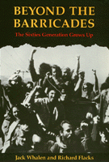

Where do young revolutionaries go when the revolution doesn’t happen?
Where do young revolutionaries go when the revolution doesn’t happen?


 Where do young revolutionaries go when the revolution doesn’t happen?
Where do young revolutionaries go when the revolution doesn’t happen?

|  |
Beyond the BarricadesThe Sixties Generation Grows UpJack Whalen and Richard Flackspaper EAN: 978-0-87722-707-6 (ISBN: 0-87722-707-1) |
"'The Big Chill' told only half the story of where Sixties activists ended up. Whalen and Flacks... honestly chronicle the other half."
—Abbie Hoffman
"What happens to youthful idealism as people leave their youth behind? ...Where do young revolutionaries go when the revolution doesn’t happen?"
Amid the social and political turmoil of the late 1960s, student demonstrations on college campuses and in nearby communities looked like a prelude to apocalypse. By 1970 radical students at the University of California, Santa Barbara (UCSB), were involved in burning the Bank of America branch in Isla Vista and a series of riots and demonstrations that culminated in hundreds of arrests, numerous injuries, and one student death. To some campus observers, the violence and property damage were nothing more than a meaningless rampage—privileged students running amok. To those actively involved in the student movement and the Radical Union, the second American revolution was at hand. The disparate views of these events persist some twenty years later.
In Beyond the Barricades, Whalen and Flacks challenge the conventional wisdom, which holds that the Sixties Generation soon outgrew their political ideals and channeled their energies into building lucrative careers and accumulating material goods. For nine years, the authors have maintained contact with eighteen men and women who participated in the UCSB student movement, asking probing questions about the long-term significance of political commitment to individual lives. They have also tracked fourteen former students who were part of the sorority/fraternity subculture in an attempt to discern whether the paths of the two student groups tend to converge as they grow older.
This study grows out of the student activists’ own assessments of the events at UCSB and the lives they have shaped in subsequent years. It demonstrates that student activists did not abandon their beliefs or become disillusioned with the prospects for social change as they left the university and ventured into the adult world. Indeed, their present political convictions and vocational commitments are largely consistent with their past views—even as they have had to adapt to changes in their personal needs and in the social climate.
In asking where the students are now, the authors illuminate something about how our society has been affected—culturally, institutionally, psychologically—by the movements and conflicts of the sixties. Whalen and Flacks "offer these stories in the same spirit that apparently guided [the] respondents: as contributions to the ongoing discourse on how we might live according to our dreams!"
"Whalen and Flacks are true Sixties sociologists—hip white knights who ride out to slay the ideal-crushing dragon of ‘The Big Chill.’ In all, a heart-on-the-sleeve, hopeful study that should appeal to social psychologists and Sixties sympathizers."
—Kirkus Reviews
"In the first systematic study of the sequels to New Left radicalism, Whalen and Flacks bring alive the real choices of real activists. This is a lucid and enlightening book, full of stimulating ideas about continuities and fragilities in American radicalism."
—Todd Gitlin, author of The Sixties: Years of Hope, Days of Rage
"As Whalen and Flacks know, ‘The Big Chill’ was a lie. The earthquake called the Sixties changed lives—and this pioneering study explains why, showing how the generation schooled in activism has been struggling to keep faith with the ideal of social justice and democracy."
—James Miller, author of Democracy is in the Streets
"Beyond the Barricades...is, in short, very
good sociology of the intimate close-up sort. And it helps us to understand that most of the so-called yuppies are not (as we have cynically been led to believe) ex-hippies or student radicals, but rather very probably come from that majority of 1960s students who were never either."
—Bennett M. Berger, University of California, San Diego
Jack Whalen is Associate Professor of Sociology at the University of Oregon.
Richard Flacks, Professor of Sociology at the University of California, Santa Barbara, is the author of Youth and Social Change and editor of Conformity, Resistance and Self-Determination: The Individual and Authority.
© 2015 Temple University. All Rights Reserved. This page: http://www.temple.edu/tempress/titles/484_reg.html.